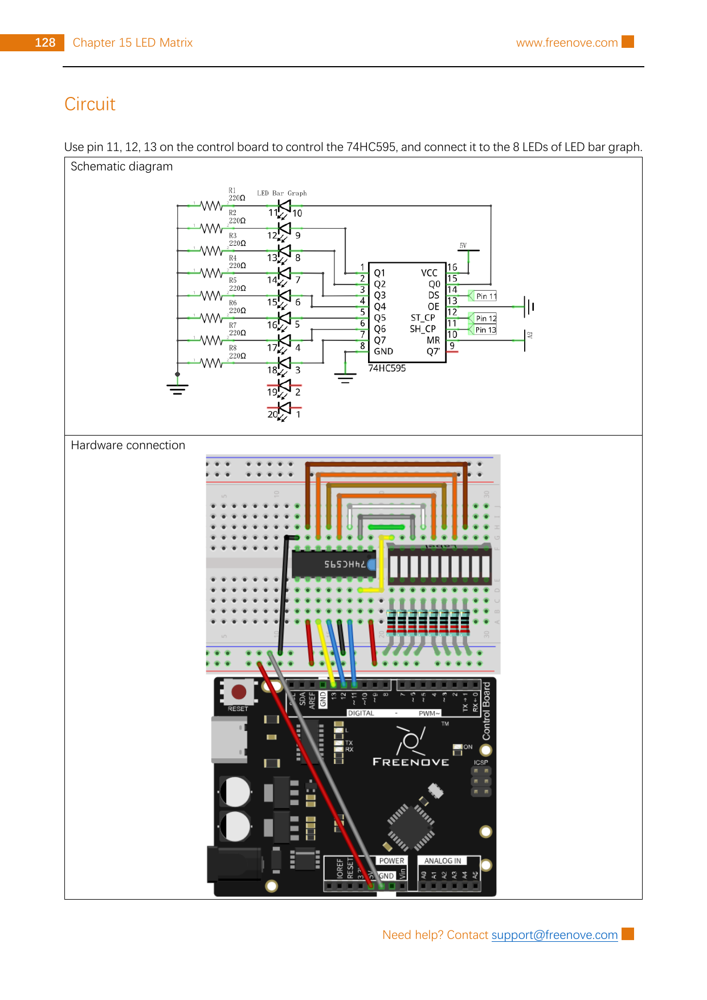

Use Arduino pins 11, 12, and 13 to control eight separately limited LEDs through a 74HC595, then move one lit segment across the bar graph.
Gather the parts
Uno-compatible board and USB cable
Breadboard
1 74HC595 shift-register IC
1 eight-segment LED bar graph
8 resistors marked 220 Ω
17 male-to-male jumper wires
Before you start: this is a low-voltage, USB-powered experiment. Work on a dry, non-metal surface and disconnect USB before moving any wire. Follow the pictured Freenove-style LED-bar-graph pin map exactly: similar-looking bar graphs can have a different leg order. Never use wall power, a higher-voltage supply, or an LED segment without its own resistor.
Build it, one check at a time
Step 1 — Read the reference circuit before wiring
Keep USB unplugged. Project 15.1 uses a 74HC595 to turn three Arduino control wires into eight output choices for an LED bar graph. The chip does not create extra power: it receives a serial pattern, then presents that pattern on its eight outputs. Use the full, unchanged reference page below to match breadboard rows and the bar graph’s physical leg numbers.

Reference image: Freenove Ultimate Starter Kit, Tutorial.pdf, Chapter 15, Project 15.1, printed page 128 / PDF page 132. Rasterized unchanged from the permitted source pack under CC BY-NC-SA 3.0; the public tutorial and licence source are linked in Reference pages.
Step 2 — Give the shift register its safe power paths
Place the 74HC595 across the breadboard centre gap with its notch oriented like the reference. Connect pin 16 (VCC) and pin 10 (MR) to 5 V. Connect pin 8 (GND) and pin 13 (OE) to GND. MR is an active-low reset, so 5 V keeps the shift register from being cleared; OE is active-high, so GND enables the outputs.
Count IC pins from the notch or dot, not from the print direction. Pause and compare every power wire with the reference image before reconnecting USB.
Step 3 — Add the three control wires
Connect Arduino pin 11 → 74HC595 pin 14 (DS). Connect Arduino pin 13 → 74HC595 pin 11 (SH_CP). Connect Arduino pin 12 → 74HC595 pin 12 (ST_CP). DS carries the next bit, SH_CP clocks it into the chip, and ST_CP latches the completed eight-bit pattern onto the outputs together.
Keep these signal wires separate from the 5 V and GND rails. The pin numbers are the most dependable cross-check if abbreviations are hard to read.
Step 4 — Build eight protected light paths
Set the eight-segment LED bar graph into the breadboard exactly as shown. Follow the reference image for every bar-graph leg: its common connections go to GND, while 74HC595 outputs Q0–Q7 each reach their matching LED path through one 220 Ω resistor. The resistor belongs in series with that one LED path, not across the power rails.
Do not infer a bar graph’s internal connections from its shape. If one segment is backwards, unlit, or your part lacks the source’s pin map, unplug USB and verify its datasheet before changing connections. Do not share one resistor among multiple LEDs and do not rearrange bar-graph legs while powered.
Step 5 — Upload the travelling-light sketch
Reconnect USB, choose your Uno-compatible board and port in Arduino IDE, and upload this original sketch. It uses the source-validated pins and the same least-significant-bit-first order. A byte named pattern begins as 0x01; each left shift moves its single 1 bit to the next output. The latch changes the visible outputs only after all eight bits are sent.
What you should see: one segment lights at a time and steps across all eight segments, then starts again. If every segment stays dark, unplug USB and first recheck 5 V/GND, OE at GND, MR at 5 V, and the three control wires. If the travel order is unexpected, compare every output, resistor, and bar-graph leg to the pictured map instead of swapping wires while powered.
Tiny challenge
Change delay(100) to delay(300) and predict the visible change. Then replace 0x01 with 0x81. Which two positions do you predict will light? Restore the original value before trying another experiment.
The unchanged reference image and upstream material are from Freenove’s Ultimate Starter Kit and are used under CC BY-NC-SA 3.0. Attribution, noncommercial, and ShareAlike requirements apply. The learner-facing instructions and small helper-function sketch are original.